전기산업기사 (2002-03-10 기출문제)
1과목: 전기자기학
1. 모든 장소에서 ∇ㆍD = 0, ∇×D/τ = 0와 같은 관계가 성립하면 D는 어떤 성질을 가져하 하는가?
- x의 함수
- y의 함수
- z의 함수
- 상수
(정답률: 67%)

2. 평면도체 표면에서 δ[m]의 거리에 점전하 Q[C]이 있을 때 이 전하를 무한원까지 운반하는데 필요한 일은 몇 [J]인가?
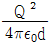
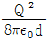
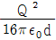
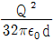
(정답률: 61%)
3. 그림과 같이 단면적이 균일한 환상철심에 권수 N1인 A코일과 권수 N2인 B코일이 있을 때 A코일의 자기인덕턴스가 L1[H]라면 두 코일의 상호인덕턴스 M은 몇 H인가? (단, 누설자속은 0이라고 한다.)
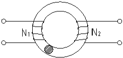
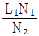
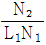
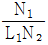
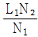
(정답률: 51%)
4. 동축케이블의 단위길이당 자기인덕턴스는? (단, 동축선 자체의 내부 인덕턴스는 무시하는 것으로 한다.)
- 두 원통의 반지름의 비에 정비례한다.
- 동축선의 투자율에 비례한다.
- 동축선간 유전체의 투자율에 비례한다.
- 동축선에 흐르는 전류의 세기에 비례한다.
(정답률: 39%)
5. 유전체에 가한 전계 ε와 분극 P사이의 관계식은?
- P = ε0(εs-1)E
- P = εs(ε0-1)E
- P = ε0(εs+1)E
- P = εs(ε0+1)E
(정답률: 75%)
6. 자기감자력(self demaonetlzing force)이 평등 자화되는 자성체에서의 관계로 옳은 것은?
- 투자율에 비례한다.
- 자화의 세기에 비례한다.
- 감자율에 반비례한다.
- 자계에 반비례한다.
(정답률: 53%)
7. 정전계에 대한 설명 중 틀린 것은?
- 도체에 주어진 전하는 도체표면에만 분포한다.
- 중공도체에 준 전하는 외부 표면에만 분포하고 내면에는 존재하지 않는다.
- 단위전하에서 나오는 전기력선의 수는 1/ε0개다.
- 전기력선은 전하가 있는 곳에서는 서로 교차한다.
(정답률: 60%)
8. 3상 케이블의 정전용량을 측정하기 위하여 그림과 같이 연결하였더니, AA'단자사이의 용량이 각각 C1, C2이었다. 이 경우 심선 1조의 용량은 몇인가?
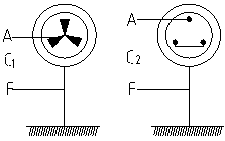
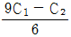
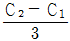
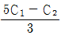
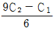
(정답률: 41%)
9. 저항이 100[Ω]인 동선에 900[Ω]인 망간선을 직렬로 연결하면 전체 저항의 온도계수는 동선의 온도계수의 약 몇 배 정도가 되는가?(단, 망간선의 온도계수는 0 이다.)
- 0.1
- 0.6
- 0.9
- 1.8
(정답률: 33%)
10. 그림과 같은 반지름 a, b인 동심원통 전극이 있다. 이 공간율 고유저항 ρ인 물질로 채울 때 두 극사이의 단위 길이당의 저항은?
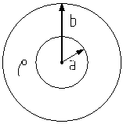
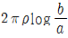
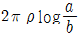
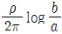
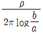
(정답률: 53%)
11. 코일로 감겨진 자기회로에서 철심의 투자율을 μ라 하고 회로의 길이를 ℓ이라 할 때 그 회로의 일 에 미스공극 ℓ0를 만들면 회로의 자기저항은 처음의 몇 배가 되는가? (단, ℓ0＜ℓ 즉, ℓ - ℓ0 = ℓ )
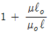
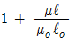
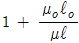
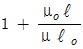
(정답률: 61%)
12. 접지된 구도체와 점전하간에 작용하는 힘은?
- 항상 흡인력이다.
- 항상 반발력이다.
- 조건적 흡인력이다.
- 조건적 반발력이다.
(정답률: 76%)
13. 비투자율 μS = 800, 원형 단면적 S = 10[cm2], 평균 자료와 같이 ℓ = 8π×10-2[m]인 환상철심에 600회의 코일을 감고 이것에 1[A]의 전류를 흘리면 철심 내부의 자속은 몇 [Wb]인가?
- 1.2×10-3
- 1.2×105
- 2.4×10-3
- 2.4×105
(정답률: 44%)
14. 무한장 직선형 도선에 1[A]의 전류가 흐를 경우 도선으로부터 R[m]떨어진 점의 자속밀도 B의 크기는?
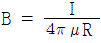
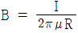
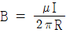
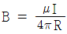
(정답률: 54%)
15. 전류가 흐르고 있는 도체와 직각방향으로 자계를 가하게되면 도체 측면에 정부의 전하가 생기는 것을 무슨 효과라 하는가?
- Thomson 효과
- Peltier 효과
- Seebeck 효과
- Hall 효과
(정답률: 60%)
16. 반지름 a[m], 중심간 거리 d[m]인 두 개의 무한장 왕복선로에 서로 반대 방향으로 전류 I[A]가 흐를 때, 한 도체에서 x[m]거리인 A점의 자계의 세기는 몇 AT/m인가? (단, d≫a, x≫a라고 한다.)
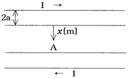
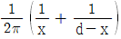
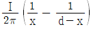
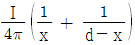
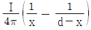
(정답률: 32%)
17. 베이블라이트 중의 전속밀도가 D[C/m2]일 때의 분극의 세기는 몇 [C/m2]인가? (단, 베이블라이트의 비유전율은 ε0이다.)
- D(ε0 - 1)
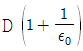
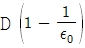
- D(ε0 + 1)
(정답률: 57%)
18. 자기회로의 자기저항에 대한 설명으로 옳은 것은?
- 자기회로의 길이에 반비례한다.
- 자기회로의 단면적에 비례한다.
- 비투자율에 반비례한다.
- 길이의 재료에 비례하고 단면적에 반비례한다.
(정답률: 42%)
19. 평행판 극판에 전압 V가 인가되고 내부전계는 평등하다고 한다. 극판간의 간격을 d라 할 때, 전하 Q가 속도 v로 움직이면 회로에 흐르는 전류는 어떻게 표현되는가?
- Qv/2d
- Qv/d
- 2Qv/d
- Qv/d2
(정답률: 52%)
20. 대지의 고유저항이 π[Ωㆍm]일 때 반지름 2[m]인 반주형 접지극의 접지저항은 몇 [Ω]인가?
- 0.25
- 0.5
- 0.75
- 0.95
(정답률: 36%)
2과목: 전력공학
21. 그림과 같이 정수가 서로 같은 평행 2회선 송전선로의 4단자 정수중 B에 해당되는 것은?
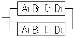
- 2B1
- 4B1
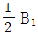
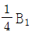
(정답률: 49%)
22. 송전선로 고장시 대칭좌표면에 의해 해석할 때 정상 및 역상임피던스가 필요한 경우는?
- 선간 단락고장
- 1선 접지고장
- 1선 단선고장
- 3선 단선고장
(정답률: 53%)
23. 고압 폐쇄 배전반에 수납할 수 없는 차단기는?
- 유입차단기(OCB)
- 자기차단기 (MBB)
- 공기차단기(ABB)
- 진공차단기(VCB)
(정답률: 35%)
24. 우라늄 235의 1kg이 핵분열을 일으킨다고 하면 약 몇 kWh의 전력량에 해당 하는가? (단, 우라늄 235가 중성자에 의해서 핵분열하는 경우에 그 잘량의 1/1100이 에너지로 변하는 것으로 한다.)
- 2.28×106
- 2.28×107
- 2.58×1010
- 2.58×1011
(정답률: 39%)
25. 트랜지스터 계전기의 설명 중 틀린 것은?
- 가동부분이 없으므로 보수가 용이하다.
- 동작이 고속이고 정정치(setting value)부근에서도 그 값이 변하지 않는다.
- 접점 빈조의 문제가 없다.
- CT의 부담은 크다. PT의 부담이 작으므로 PT의 오차가 낮게 된다.
(정답률: 44%)
26. 석탄연소 화력발전소에서 사용되는 접진장치의 효율이 가장 큰 것은?
- 전기식집진기
- 수세식집진기
- 원심력식 집진장치
- 직렬 결합식 집진장치
(정답률: 42%)
27. 그림과 같이 A, B양 지점에 각각 I1, I2의 집중 부하가 있고, 양단의 전압강하를 모두 균등하게 할 때 전선이 가장 경제적으로 되는 급전점 P는 A점으로부터 몇 km인가?
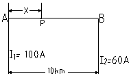
- 2.55
- 3.75
- 5.45
- 6.25
(정답률: 45%)
28. 그림과 같은 회로의 영상임피던스는?
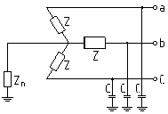
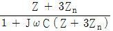
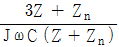
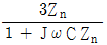
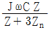
(정답률: 40%)
29. 직접 접지방식에 대한 설명 중 옳지 않은 것은?
- 이상전압 발생의 우려가 없다.
- 계통의 절연수준이 낮아지므로 경제적이다.
- 변압기의 단절연이 가능하다.
- 보호계전기가 신속히 동작하므로 과도안정도가 좋다.
(정답률: 49%)
30. 어떤 공장의 소모전력이 100[kW]이며, 이 부하의 역률이 0.6일 때, 역률을 0.9로 개선하기 위한 전력용 콘덴서의 용량은 약 몇 kVA인가?
- 30
- 60
- 85
- 90
(정답률: 55%)
31. 동기조상기(A)와 전력용콘덴서(B)를 비교한 것으로 옳은 것은?
- 조정 : A는 계단적, B는 연속적
- 전력손실 : A가 B보다 적음
- 무효전력 : A는 진상, 지상임용, B는 진상용
- 시승전 : A는 불가능, B는 가능
(정답률: 58%)
32. 송전선로의 특성임피던스를 Z[Ω], 전파정수를 α라 할 때 [lx]이 선로의 직렬임피던스는 어떻게 표현되는가?
- Zα
- Z/α
- α/Z
- 1/Zα
(정답률: 46%)
33. 240mm2, 강심알루미늄연선의 20℃에서 1km당 저항은 0.120Ω이다. 이 전선의 50℃에서의 저항은 몇 Ω 인가? (단, 30℃에서의 저항온도계수는 0.00385이다.)
- 0.124
- 0.134
- 0.152
- 0.212
(정답률: 46%)
34. 단상변압기 3대를 △결선으로 운전하던 중 1대의 고장으로 V결선할 경우 V결선과 △결선의 출력비는 몇 %인가?
- 52.2
- 57.7
- 66.6
- 86.6
(정답률: 60%)
35. 가공선 계통은 지중선 계통보다 인덕턴스 및 정전용량이 어떠한가?
- 인덕턴스, 정전용량이 모두 작다.
- 인덕턴스, 정전용량이 모두 크다.
- 인덕턴스는 크고, 정전용량은 작다.
- 인덕턴스는 작고, 정전용량은 크다.
(정답률: 44%)
36. 3상 송전선로와 통신선이 병행되어 있는 경우에 통신 유도장해로서 통신선에 유도되는 정전유도전압은?
- 통신선의 길이에 비례한다.
- 통신선의 길이의 자승에 비례한다.
- 통신선의 길이에 반비례한다.
- 통신선의 길이와는 관계가 없다.
(정답률: 45%)
37. 기준용량 P[kVA], V[kV]일 때 % 임피던스값이 ZP인 것을 기준용량 P1[kVA], V1[kV]로 기준값을 변환하면 새로운 기준값에 대한 %임피던스 값은?
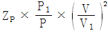
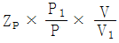
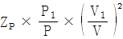
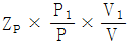
(정답률: 36%)
38. 기초와 압입의 암반이 양호한 협곡에 적합한 댐은?
- 중력댐
- 사력댐
- 아치댐
- 중공댐
(정답률: 51%)
39. 현재 널리 사용되고 있는 GCB(Gas Circult Breaker) 용 가스는?
- SF6 가스
- 알곤가스
- 네온가스
- N2 가스
(정답률: 70%)
40. 중성점 고저항접지방식의 평행 2회선 송전선로의 지락 사고의 차단에 사용되는 계전기는?
- 선택접지계전기
- 역상계전기
- 거리계전기
- 과부하계전기
(정답률: 61%)
3과목: 전기기기
41. 콘덴서 전동기의 특징이 아닌 것은?
- 소음 증가
- 역률 양호
- 효율 양호
- 진동 감소
(정답률: 45%)
42. 직류 분권발전기의 무부하 특성시험을 할 때, 계자저항기의 저항을 증감하여 무부하 전압을 증감시키면 어느 값에 도달하면 전압을 안정하게 유지할 수 없다. 그 이유는?
- 전압계 및 전류계의 고장
- 전류자기의 부족
- 임계저항치로 되있기 때문에
- 계자저항기의 고장
(정답률: 49%)
43. 그림과 같은 회로에서 Q1에 역 바이어스가 걸리는 시간을 나타낸 식은?
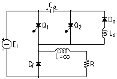
- 0.693 Co/R [sec]
- 0.693 R/Co [sec]
- RCo [sec]
- 0.693 RCo [sec]
(정답률: 36%)
44. 단상브리지 전파정류회로의 저항부하의 전압이 100[V]이면 전원전압 [V]는?
- 111
- 141
- 100
- 90
(정답률: 37%)
45. 1차 전압 6600[V], 2차 전압 220[V], 주파수60[Hz], 1차 권수 1000[회]의 변압기가 있다. 최대 자속 [Wb]은?
- 0.020
- 0.025
- 0.030
- 0.032
(정답률: 46%)
46. 직류 전동기의 속도 제어법에서 정출력 제어에 속하는 것은?
- 전압 제어법
- 계자 제어법
- 워드 레오나드 제어법
- 전기자 저항 제어법
(정답률: 46%)
47. 16극과 8극의 유도 전동기를 병렬 종속접속법으로 속도 제어할 때, 전원주파수가 60Hz인 경우 무부하속도 n0는?
- 600[rpm]
- 900[rpm]
- 300[rpm]
- 450[rpm]
(정답률: 33%)
48. 단상 직권 정류자 전동기에서 주자속의 최대치를 øm, 자극수를 p, 전기자 병렬 회로수를 a, 전기자 전도체수를 Z, 전기자의 속도를 N[rpm]이라 하면 속도 기전력의 실효값 Er[V]은? (단, 주자속은 정현파이다.)
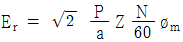
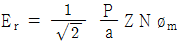
(정답률: 40%)
49. 변압비 10 : 1 의 단상 변압기 3대를 Y-△를 접속하여 2차측에 200[V], 75[kVA]의 3상 평형부하를 걸었을 때 1차측에 흐르는 전류는 몇 [A]인가?
- 10.5
- 11.0
- 12.5
- 13.5
(정답률: 47%)
50. 동기 전동기의 전기자 반작용에서 전압과 동상인 전류의 주자극율?
- 감지한다.
- 중지한다.
- 교차 자화한다.
- 아무런 자화현상도 없다.
(정답률: 48%)
51. 단상 유도 전압 조정기에서 1차 전원 전압을 V1이라 하고 2차의 유도 전압을 E2라고 할 때 부하 단자전압을 연속적으로 가변할 수 있는 조정 단위는?
- 0 ~ V1까지
- V1 + E2까지
- V1 ~ E2까지
- V1 + E2 에서 V1 ~ E2까지
(정답률: 41%)
52. 단상 전파 정류회로에서 저항부하설 때의 맥동률 V는?
- 0.45[%]
- 0.17[%]
- 17[%]
- 48[%]
(정답률: 45%)
53. 50[kW]를 소비하는 동기전동기가 역률 0.8의 부하 200[kW]와 병렬로 접속되고 있을 때 합성부하에 0.9의 역률을 가지게 하려면 전동기의 진상 무효전력 [kVar]은?
- 18
- 28
- 38
- 45
(정답률: 37%)
54. 보통 농형에 비하여 2종 농형 전동기의 특징인 것은?
- 최대 토크가 크다.
- 손실이 적다.
- 기동 토크가 크다.
- 슬립이 크다.
(정답률: 50%)
55. 1차 전압 200[V], 2차 전압 220[V], 선로출력 100[kVA]의 단권변압기의 자기용량[kVA]은?
- 약 40
- 약 30
- 약 20
- 약 9
(정답률: 41%)
56. 농형 유도 전동기의 기동법이 아닌 것은?
- 2차 저항 기동법
- Y -△ 기동법
- 전전압 기동법
- 기동보상기법
(정답률: 47%)
57. 동기전동기의 제동권선의 효과는?
- 정지시간의 단축
- 토크의 증가
- 기동토크의 발생
- 과부하 내량의 증가
(정답률: 40%)
58. 정격속도에 비하여 기동 회전력이 가장 큰 전동기는?
- 타여자기
- 직권기
- 분권기
- 복권기
(정답률: 54%)
59. 1차 전압 6600[V], 권수비 30인 단상 변압기로 전등부하에 20[A]를 공급할 때의 압력[kW]은? (단, 변압기의 손실은 무시한다.)
- 4.4
- 5.5
- 6.6
- 7.7
(정답률: 44%)
60. 3상 동기발전기를 병렬운전 시키는 경우 고려하지 않아도 되는 조건은?
- 기전력의 파형이 같을 것
- 기전력의 주파수가 같을 것
- 회전수가 같을 것
- 기전력의 크기가 같을 것
(정답률: 55%)
4과목: 회로이론
61. 다음과 같은 I[s]의 초기값 i(0+)가 바르게 구해진 것은?
- 2/5
- 1/5
- 2
- -2
(정답률: 43%)
62. 2차 제어계에서 최대 오버 슈트(over shoot)가 일어나는 시간 tP, 고유진동수 ωn, 감쇠율 δ사이에는 어떤 관계가 있는가?
(정답률: 33%)
63. 선로의 단위길이당 분포 인덕턴스, 저항, 정전용량, 누설 콘덕턴스를 각각 L, R, C, G라 하면 전파정수는?
(정답률: 40%)
64. 대칭 좌표법을 이용하여 3상 회로의 각 상전압을 다음과 같이 쓴다. 이와 같이 표시될 때 정상분 전압 Va1 표시를 올바르게 계산한 것은? (상순은 ABC이다.)
(정답률: 43%)
65. 회로망의 전달함수 를 구하면 어떻게 되는가?
(정답률: 44%)
66. 그림의 블록선도에서 전달함수로 표시한 B/A값은?
- 12/5
- 16/5
- 20/5
- 28/5
(정답률: 32%)
67. 그림과 같은 회로에서 시각 t = 0에서 스위치를 갑자기 닫은 후 전류 i가 0에서 정상 전류의 63.2[%]에 달하는 시간 [sec]를 구하면?(문제오류고 그림파일이 복원되지 않았습니다. 정답은 3번입니다. 정확한 그림 내용을 아시는분 께서은 관리자 메일로 부탁 드립니다.)
- LR
- 1/LR
- L/R
- R/L
(정답률: 58%)
68. 다음 용어 설명중 옳지 않은 것은?
- 목표값을 제어할 수 있는 신호로 변환하는 장치를 기준 입력 장치
- 기준입력 신호를 받는 장치를 조절부
- 제어량을 설정값과 비교하여 오차를 계산하는 장치를 오차 검출기
- 제어량을 측정하는 장치를 검출단
(정답률: 43%)
69. 어떤 회로에서 유효전력 80[W], 무효전력 60[Var]일 때 역률은 몇 [%]인가?
- 100
- 95
- 90
- 80
(정답률: 57%)
70. 논리식 를 간단히 계산한 결과는?
(정답률: 38%)
71. 전달함수가 인 시스템에 대하여 특성방정식의 나이퀴스트 선도를 그리려 한다. 다음 중 나이퀴스트 선도를 그리기 위한 루우프 전달함수는?
(정답률: 35%)
72. 어떤 제어계의 임펄스 응답이 sin 2t이면 이 제어계의 전달함수는?
(정답률: 44%)
73. 어떤 선형 시불변계의 상태방정식이 다음과 같다. (단, , x(t) = Ax(t) + Bu(t)) 상태천이 행렬 ø(t)는?
(정답률: 28%)
74. 다음 안정도 판별법 중 루프 전달함수의 극점과 영점이 s 평면의 우반 평면에 있을 경우 판정할 수 없는 방법은?
- 보드선도 판별법
- 근궤적법
- 고유값 분석법
- 나이퀴스트 판별법
(정답률: 29%)
75. 그림과 같은 이상 변압기의 4단자 정수 A, B, C, D는 어떻게 표시되는가?
- n, 0, 0, 1/n
- 1/n, 0, 0, 1-n
- 1/n, 0, 0, n
- n, 0, 1, 1/n
(정답률: 37%)
76. PD 조절기의 전달함수 GD(S) = 1.02 + 0.002S의 영점은?
- -510
- -1020
- 510
- 1020
(정답률: 36%)
77. 전압 200[V], 전류 30[A]로서 4.8[kW]의 전력을 소비하는 회로의 리액턴스 [Ω]는?
- 6.6
- 5.3
- 4.0
- 3.3
(정답률: 37%)
78. 어떤 회로에 전압을 115[V]를 인가하였더니 유효전력이 230[W], 무효전력이 345[Var]를 지시한다면 회로에 흐르는 전류 [A]의 값은?
- 약 2.5
- 약 5.8
- 약 3.6
- 약 4.5
(정답률: 42%)
79. f(t) = e-at의 Z-변환은?
(정답률: 27%)
80. R = 1[MΩ], C = 1[μF]의 직렬 회로에 직류 100[V]를 가했다. 시정수 T[sec]와 전류의 초기값 [A]를 구하면?
- 5[sec], 10-4[A]
- 4[sec], 10-3[A]
- 1[sec], 10-4[A]
- 2[sec], 10-3[A]
(정답률: 51%)
5과목: 전기설비기술기준 및 판단 기준
81. 특별고압 계기용 변성기의 2차측 전로에는 제 몇 종 접지 공사를 하여야 하는가?
- 제 1 종
- 제 2 종
- 제 3 종
- 특별 제 3 종
(정답률: 38%)
82. 풀용 수중 조명등에 사용되는 절연변압기의 2차측 전로의 사용전압이 몇 [V]를 넘는 경우에 그 전로에 지기가 생겼을 때 자동적으로 전로를 차단하는 장치를 하여야 하는가?
- 30
- 60
- 150
- 300
(정답률: 35%)
83. 고압 가공전선이 안테나의 접근상태로 시설되는 경우에 가공전선과 안테나 사이의 수평 이격거리는 최소 몇 [cm] 이상인가? (단, 가공전선으로는 케이블을 사용하지 않는다고 한다.)
- 50
- 80
- 100
- 120
(정답률: 44%)
84. 가공 전선로의 지지물에 지선을 시설하려고 한다. 이 지선의 최저기준으로 옳은 것은?
- 소선 굵기 : 2.0[mm], 안전율 : 3.0, 허용인장하중 : 220[kg]
- 소선 굵기 : 2.6[mm], 안전율 : 2.5, 허용인장하중 : 440[kg]
- 소선 굵기 : 1.6[mm], 안전율 : 2.0, 허용인장하중 : 440[kg]
- 소선 굵기 : 2.6[mm], 안전율 : 1.5, 허용인장하중 : 330[kg]
(정답률: 55%)
85. 특별고압 가공전선로의 지지물 양측의 경간의 차가 큰 곳에 사용되는 철탑은?
- 내장형 철탑
- 인류형 철탑
- 각도형 철탑
- 보강형 철탑
(정답률: 61%)
86. 66[kV]의 기계기구, 모선 등을 옥외에 시설하는 변전소의 구내에 취급자 이외의 자가 들어가지 않도록 울타리를 시설하는 경우에 울타리의 높이와 울타리로부터 충전부분까지의 거리의 합계는 몇 [m] 이상이어야 하는가?
- 5
- 6
- 7
- 8
(정답률: 45%)
87. 직류귀선은 귀선용 궤조와 궤조간 및 궤조의 바깥쪽 몇 [cm] 이내에 시설하는 부분 이외에는 대지로부터 절연하여야 하는가?
- 15
- 20
- 25
- 30
(정답률: 34%)
88. 고압전로의 중성점을 접지할 때 접지선으로 연동선을 사용하는 경우의 지름은 최소 몇 [mm]인가?
- 2.6
- 3.2
- 4
- 5
(정답률: 37%)
89. 35[kV]이하의 특별고압 가공전선이 건조물과 제 1 차 접근 상태로 시설되는 경우의 이격거리는 일반적인 경우 몇 [m] 이상이어야 하는가?
- 3
- 3.5
- 4
- 4.5
(정답률: 35%)
90. 그림에서 1, 2, 3, 4의 X표시에는 과전류차단기를 시설한 곳이다. 잘못 시설된 곳은?
- 1
- 2
- 3
- 4
(정답률: 40%)
91. 저압 옥내배선의 사용전선으로 단면적이 1[mm2]이상인 케이블을 사용한다면 어떤 종류의 케이블을 사용하여야 하는가?
- CV 케이블
- MI 케이블
- 캡타이어케이블
- BC 케이블
(정답률: 43%)
92. 옥내 고압용 이동전선의 시설방법으로 옳은 것은?
- 전선은 MI 케이블을 사용하였다.
- 다선식 선로의 중성선에 과전류차단기를 시설하였다.
- 이동전선과 전기사용 기계기구와는 해체가 쉽게 되도록 느슨하게 접속하였다.
- 전로의 지기가 생겼을 때에 자동적으로 전로를 차단하는 장치를 시설하였다.
(정답률: 48%)
93. 지중전선로에 사용되는 전선은?
- 절연전선
- 동복강선
- 케이블
- 나경동선
(정답률: 54%)
94. 특별고압 가공전선로의 지지물에 시설하는 통신선 또는 이에 직접 접속하는 가공 통신선의 높이는 횡단보도교의 위에 시설하는 경우에는 일반적으로 그 노면상 몇 [m] 이상으로 하여야 하는가?
- 5
- 5.5
- 6
- 6.5
(정답률: 33%)
95. 중성점 접지에 22.9[kV] 가공전선과 직류 1500[V] 전차선을 통일 지지물에 병가할 때 상호간의 이격거리는 일반적인 경우 몇 [m] 이상인가?
- 1.0
- 1.2
- 1.5
- 2.0
(정답률: 23%)
96. 병원, 진료소등의 진찰, 검사, 치료 또는 검사등의 의료 행위를 하는 의료실내에 시설하는 위료기기의 금속제 외함에 보호접지를 하는 경우 그 접지저항값은 몇 [Ω]이하로 하여야 하는가?
- 5
- 10
- 30
- 50
(정답률: 48%)
97. 옥내에 시설하는 사용전압이 400[V] 미만인 전구선으로 캡다이어 케이블을 사용할 경우, 단면적이 몇 [mm2]이상인 것을 사용하여야 하는가?
- 0.75
- 2
- 3.5
- 5.5
(정답률: 51%)
98. 목주를 사용한 고압가공전선로의 최대 경간은 몇 [m] 인가?
- 50
- 100
- 150
- 200
(정답률: 46%)
99. 옥내에 시설하는 저압전선으로 나전선을 절대로 사용할 수 없는 경우는?
- 금속덕트 공사에 의하여 시설하는 경우
- 버스덕트공사에 의하여 시설하는 경우
- 애자사용공사에 의하여 전개된 곳에 전기로용 전선을 시설하는 경우
- 라이팅덕트공사에 의하여 시설하는 경우
(정답률: 47%)
100. 최대사용전압이 170000[V]를 넘는 결선(성형결선)으로서 중성점 직접접지식 전로에 접속하고 또한 그 중성점을 직접 접지하는 변압기 전로의 절연내력 시험전압은 최대 사용전압의 몇 배의 전압인가?
- 0.3
- 0.64
- 0.72
- 1.1
(정답률: 34%)
∇ㆍD = 0은 D가 divergence-free하다는 것을 의미합니다. 즉, D의 발산은 0이며, D는 어떤 한 점에서 나가는 전하의 양과 들어오는 전하의 양이 같다는 것을 의미합니다.
∇×D/τ = 0은 D가 curl-free하다는 것을 의미합니다. 즉, D의 회전은 0이며, D는 어떤 경로를 따라 이동하더라도 그 크기와 방향이 변하지 않는다는 것을 의미합니다.
따라서, D는 상수를 가지고 있어야 합니다. 만약 D가 x, y, z의 함수였다면, D의 발산과 회전이 모두 0이 되는 것은 불가능합니다.